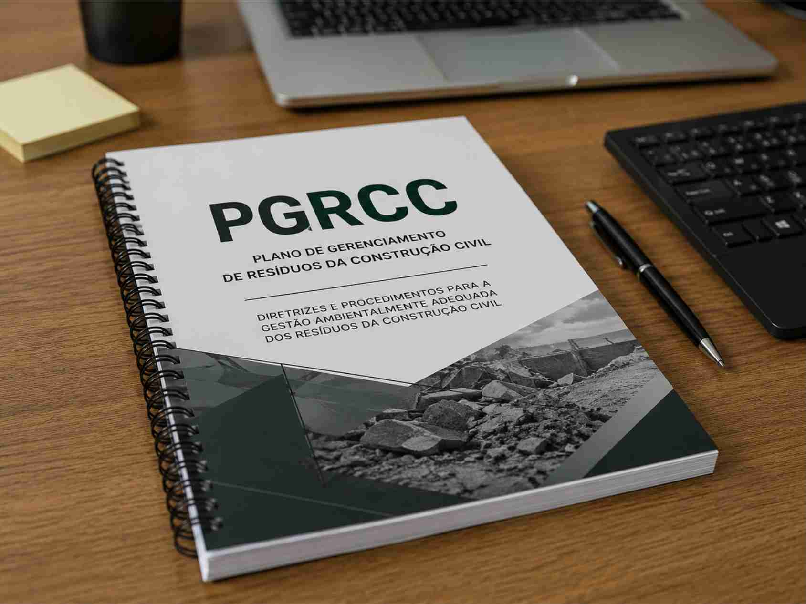

Contexto técnico do curso
O Plano de Gerenciamento de Resíduos da Construção Civil — PGRCC — é um instrumento técnico utilizado para orientar a segregação, acondicionamento, transporte, triagem, destinação e disposição final dos resíduos gerados em obras, reformas, demolições e empreendimentos imobiliários.
A elaboração adequada do PGRCC exige compreensão normativa, domínio dos fluxos de geração de resíduos no canteiro, capacidade de estimar quantitativos, identificação da infraestrutura local de transporte e destinação, além da construção de um documento tecnicamente defensável perante o empreendedor, os responsáveis técnicos e o órgão competente.

O que você precisa saber sobre o PGRCC
Material introdutório para obras e empreendimentos que precisam estruturar informações básicas sobre o Plano de Gerenciamento de Resíduos da Construção Civil.
Para quem o curso é indicado?
O curso é indicado para profissionais e estudantes das áreas de engenharia, arquitetura, meio ambiente, saneamento, gestão de obras, consultoria ambiental, licenciamento e planejamento de empreendimentos imobiliários.
Abordagem aplicada
O curso adota metodologia aplicada, com exposição técnica, análise de exemplos, exercícios orientados e construção progressiva de um produto final. O objetivo é que o participante compreenda não apenas o conteúdo formal do plano, mas também a lógica técnica necessária para justificar as escolhas adotadas em um PGRCC.
A carga horária total será de 20 horas-aula, distribuídas em encontros presenciais aos sábados, das 8h às 12h. Ao longo das aulas, os participantes serão conduzidos desde os fundamentos normativos e conceituais até a estruturação mínima do plano e apresentação do trabalho final.
As atividades foram organizadas para permitir avanço gradual do conteúdo, combinando teoria, exemplos práticos, discussão de situações reais, exercícios orientados e construção de um produto técnico avaliativo.
-
1
Aula 1 — Fundamentos
Introdução ao PGRCC, base conceitual, responsabilidades, contexto normativo e papel do plano no licenciamento e na gestão de obras.
-
2
Aula 2 — Classificação dos resíduos
Identificação das classes de resíduos da construção civil, fontes geradoras, segregação, acondicionamento e responsabilidades técnicas.
-
3
Aula 3 — Estimativa de geração
Métodos de estimativa, organização de planilhas, memória de cálculo, indicadores de geração e compatibilização com as características do empreendimento.
-
4
Aula 4 — Diagnóstico da infraestrutura local
Levantamento de transportadores, áreas de triagem, reciclagem, beneficiamento, destinação final e análise da viabilidade operacional do plano.
-
5
Aula 5 — Estrutura mínima do PGRCC e apresentação do trabalho final
Organização do documento, quadros, anexos, recomendações, medidas de controle e apresentação estudo de caso para o Trabalho Final.
O Trabalho Final deve ser entregue para avaliação em até 7 dias após a última aula.
A nota final será divulgada em até 15 dias após a conclusão das atividades, juntamente com a emissão do certificado para os participantes que atenderem aos critérios mínimos de frequência, participação e avaliação.
Produto final do curso
A avaliação poderá envolver a construção de um produto técnico final, com aplicação dos conceitos discutidos em aula. A certificação será emitida aos participantes que cumprirem os critérios mínimos de participação e entrega definidos pela organização do curso.
Consulte o calendário
Deseja participar da próxima turma?
Solicite informações sobre inscrição, valores, datas disponíveis e condições para turmas presenciais ou fechadas para equipes técnicas.
Solicitar informações